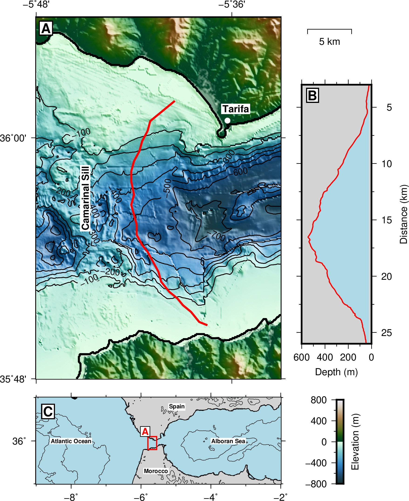
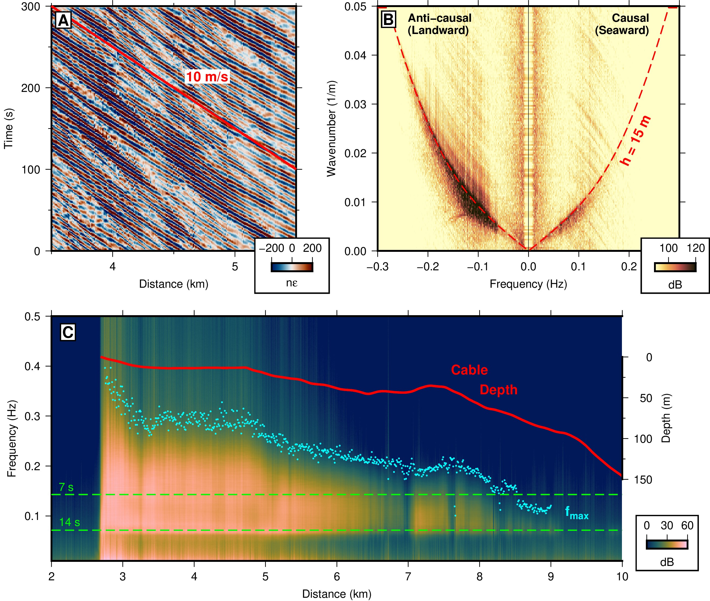
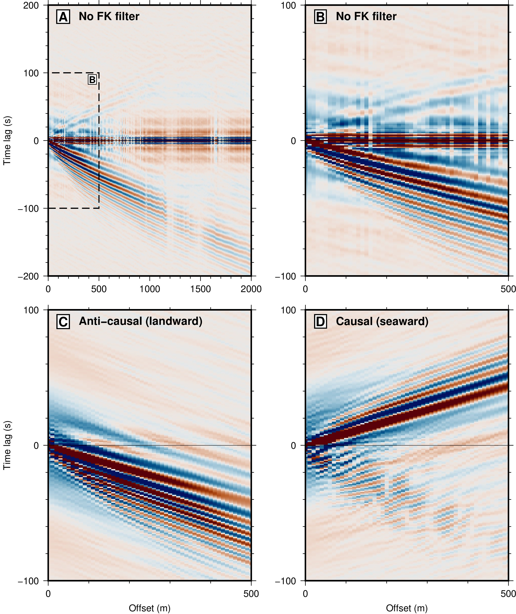
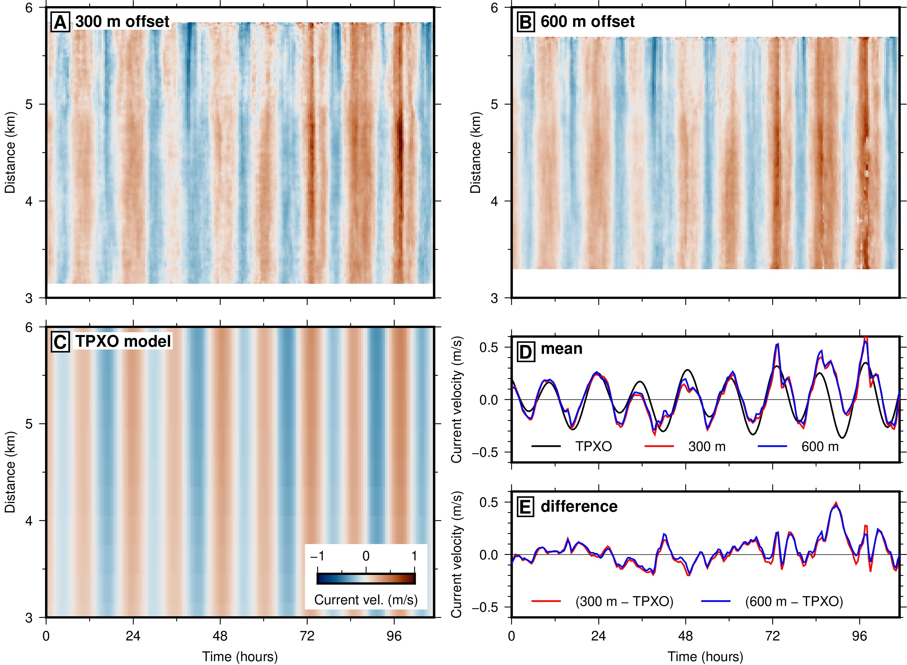

|
Because seafloor fiber-optic cables are located at the boundary between the ocean and the solid Earth, ocean-bottom DAS datasets are at least as sensitive to oceanic pressure perturbations associated with waves and tides as ordinary seismic signals. Conventional ocean-bottom seismometer networks often have station spacing greater than 10-km, so ocean waves are highly aliased. Consequently, seismologists typically apply tilt and compliance corrections which sacrifice the horizontal seismometer and pressure gauge data in order to remove the effects of waves and currents. Ocean-bottom DAS has only one component so such corrections are impossible, but because DAS has 1-10 m spatial resolution, ocean waves are unaliased, permitting image-based wavefield separation to isolate seismic signals and direct study of the ocean wave field.
In a study recently published in JGR Oceans, we extended ambient noise interferometry to ocean surface gravity waves (OSGW) observed on a DAS array in shallow water. Extracting the OSGW Green's function every half hour between each pair of channels, we applied a subarray beamforming method to measure OSGW dispersion and invert for water depth, which may be helpful in locating subsea cables and co-registering optical/geographic channel locations when the cable path is unknown or unavailable. We then applied a waveform stretching method to estimate the Doppler shift between waves propagating in each direction along the array, recovering the depth-averaged along-cable ocean current velocity, which compared favorably with a tidal flow model.




|
Back to Research...